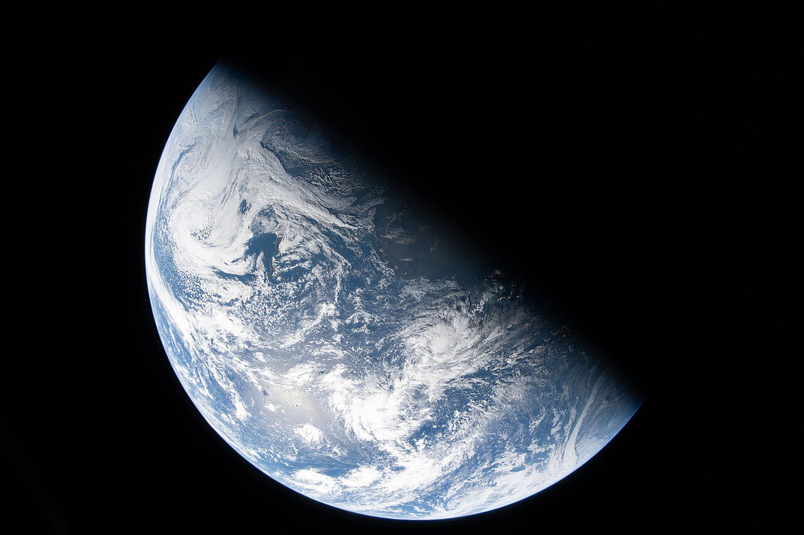
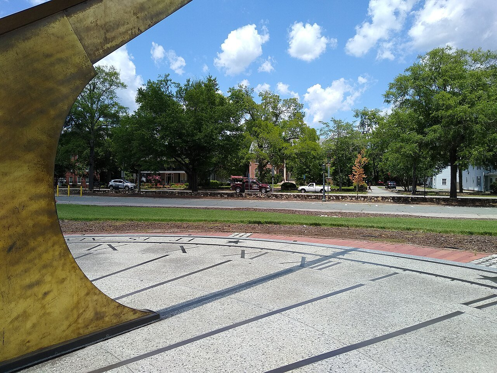
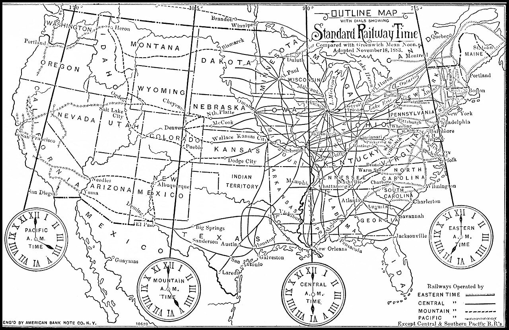
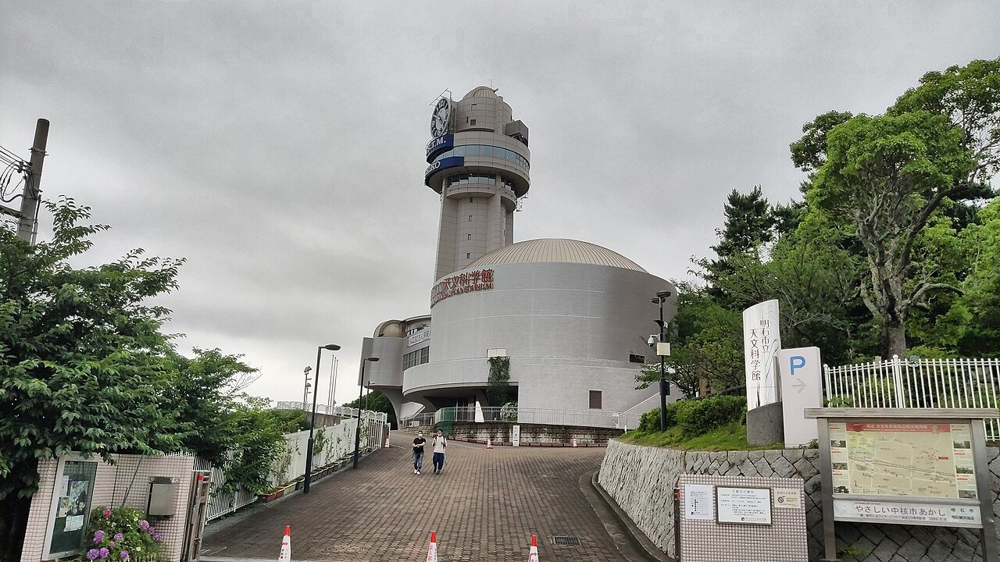
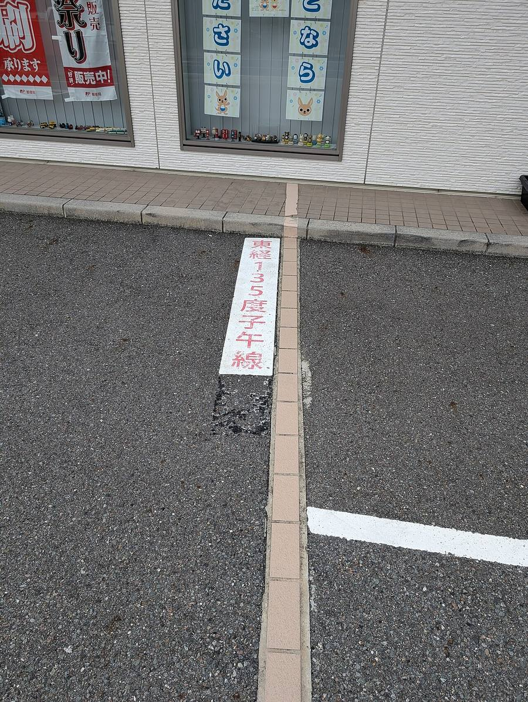
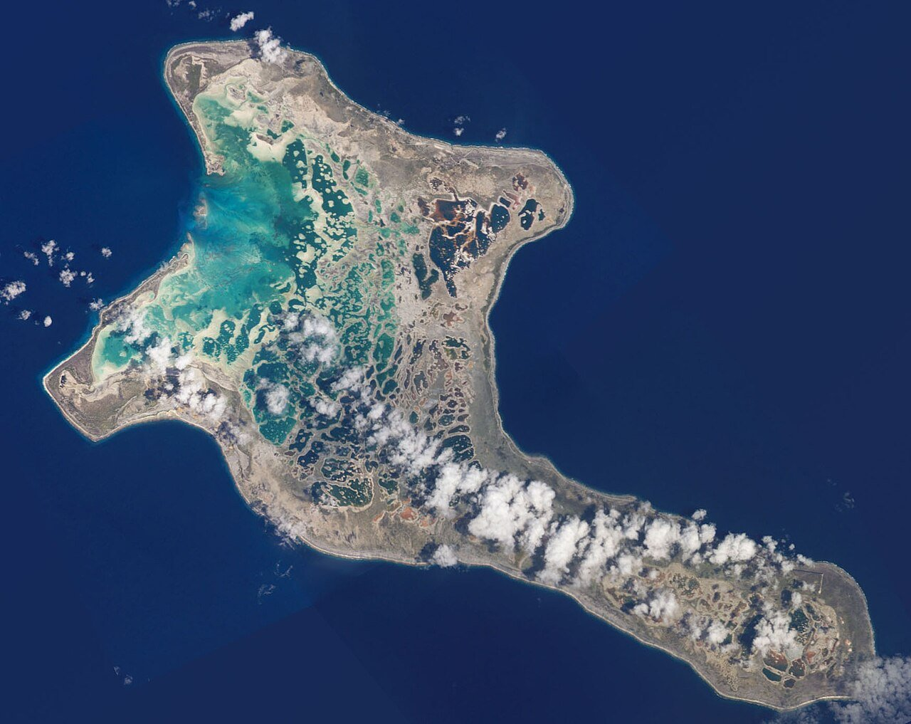

カタール、2022年11月23日の午後4時。サッカーのワールドカップで、日本代表とドイツ代表の試合が始まりました。そのとき日本の時計は、夜の10時。多くの人が夜ふかしをしてテレビの前に集まり、2対1の逆転勝ちを見届けました。
カタールと日本の時差は6時間。世界には、こうした時計の「ずれ」があちこちにあります。そもそも時差はなぜあり、だれがその線を引いたのでしょうか。

同じ試合なのに、現地では午後4時、日本では夜10時のキックオフ。時計が国ごとに違うのは、昼と夜の境目が地球の上を動いていくからですが、時差の線を引いたのは人間でした。回る地球の図と時差の地図で、その成り立ちをたどってみませんか。
カタール、2022年11月23日の午後4時。サッカーのワールドカップで、日本代表とドイツ代表の試合が始まりました。そのとき日本の時計は、夜の10時。多くの人が夜ふかしをしてテレビの前に集まり、2対1の逆転勝ちを見届けました。
カタールと日本の時差は6時間。世界には、こうした時計の「ずれ」があちこちにあります。そもそも時差はなぜあり、だれがその線を引いたのでしょうか。
地球が24時間で1回転するので、太陽が真上に来る時刻は、東西に15度ずれるごとに1時間ずつ違います。その違いを、19世紀に鉄道や船の都合で国や地域ごとの「標準時」にまとめたのが、いまの時差です。
地球は、北極と南極を結ぶ軸を中心に、西から東へ回っています。太陽を基準にすると、1回転にかかるのはおよそ24時間。1回転は360度なので、360÷24で、1時間に15度ずつ回る計算です。
太陽がいちばん高く上がる時刻を「正午」とすると、東にある町ほど早く正午を迎えます。経度（地球を東西に区切る角度）が東へ15度ずれるごとに、正午は1時間早く来ます。西へ15度なら、1時間おそくなります。
身近な例でくらべてみましょう。東京はおよそ東経139.8度、大阪は東経135.5度にあります。差は約4.3度。太陽で決める正午は、東京のほうが約17分早くやってきます。

19世紀のなかばまで、多くの町は、自分の町で太陽が真南に来る時刻を正午として時計を合わせていました。これを「地方時」といいます。歩きや馬車の旅なら、町ごとに数分ずれていても困りませんでした。
ようすを変えたのが鉄道です。駅ごとに時計が違うと、時刻表がとても複雑になります。イギリスでは1847年、鉄道会社の団体が、全国の駅の時計を首都ロンドンの時刻にそろえると決めました。
広いアメリカは、もっと大変でした。町ごとの時刻は300以上あったともいわれ、鉄道会社が使う時刻だけでも50ほど。そこで1883年11月18日の正午、アメリカとカナダの鉄道は、いっせいに「標準時」へ切りかえます。アメリカ本土を4つの時間帯に分け、帯の中では同じ時刻を使うことにしたのです。
時間帯の東のほうの町では、新しい時刻が地元の太陽の時刻より数分おくれていました。そのため、町の時計で正午を迎えたあと、針を数分戻して、新しい時刻でもう一度正午を迎えたのです。この日が「2つの正午の日」と呼ばれるのは、そのためです。

時間帯を世界で使うには、基準になる線が要ります。1884年10月、アメリカの首都ワシントンに26か国の代表が集まり、「国際子午線会議」が開かれました。子午線とは、北極と南極を結ぶ南北の線のことです。
会議では、ロンドンのグリニッジ天文台を通る子午線を、経度0度にすると決まりました。投票は賛成22、反対1（サントドミンゴ、いまのドミニカ共和国）、棄権2（フランスとブラジル）。多くの船の海図がすでにグリニッジを基準にしていたことが、決め手になったとされます。
日本の動きも早いものでした。1886年（明治19年）7月、勅令（天皇の名で出す命令）で、東経135度の子午線を日本全国の時刻の基準にすると定め、1888年1月1日から使い始めます。135度は、15度の9つ分。そのため日本の時刻は、ロンドンより9時間進んでいます。
東経135度の線は、兵庫県明石市などを通っています。明石市は「時のまち」として知られ、1960年に開館した明石市立天文科学館の時計塔は、この線の真上に建っています。


15度ごとに1時間なら、世界は24本のまっすぐな帯に分かれるはずです。ところが、実際の時差の境目は、国境に沿って曲がりくねっています。時刻を決めるのは、それぞれの国や地域だからです。
いちばん目立つのが中国です。国土は帯でいえば5本分にまたがっていますが、1949年ごろから、北京の時刻（ロンドンより8時間進んだ時刻）を全土の標準にしています。
そのため西の新疆（しんきょう）ウイグル自治区には、冬は朝10時をすぎてから日がのぼる町もあります。地元の一部では、北京より2時間おそい「新疆時間」も並べて使われています。
1時間きざみでない国もあります。インドはロンドンより5時間30分、ネパールは5時間45分進んだ時刻です。ネパールは1986年に、それまで使っていたインドの時刻から15分進めて、いまの形になりました。
飛行機で日本から東へ、地球を1周する旅を考えてみましょう。時間帯を1つこえるたびに時計を1時間進めていくと、日本に戻るころには、合わせて24時間、つまり丸1日進めたことになります。家で待つ人のカレンダーと、1日ずれてしまうのです。
そこで、太平洋のまん中の経度180度あたりに「日付変更線」を決め、ここを東へこえるときは日付を1日戻すことにしています。国際法で決まった線ではなく、地図の上の取り決めです。
線の位置は、国の都合で動くこともあります。太平洋の島国キリバスは、国の中を通っていた線を、1994年の末に国の東側へ動かしました。いま東のライン諸島は、世界でいちばん進んだ時刻を使っています。

いまの世界では、グリニッジの時刻をもとにした「協定世界時（UTC）」を基準にして、各地の時刻を「+9時間」「−5時間」のように表しています。
いちばん進んだ時刻（+14）と、いちばんおくれた時刻（−12、無人の島だけ）の差。24時間を超えるので、同じ瞬間に3つの日付が並ぶ時間もある英語版 Wikipedia「List of UTC offsets」
UTCとの差の種類。+5:45のような半端なものも含む2026年時点、夏時間を除く。英語版 Wikipedia「List of UTC offsets」をもとに編集部が数えたもの
赤道の地面が、自転で1秒間に動く距離。この速さで回るので、太陽の見える位置は1時間に15度ずつずれていく時速にすると約1,670km。英語版 Wikipedia「Earth's rotation」
南太平洋に、サモアとアメリカ領サモアという2つの島々があります。いちばん近いところでは、約64kmしか離れていません。ところが、2つの島の時計が同じ「午後3時」を指しているとき、日付は丸1日違うのです。
あいだを、日付変更線が通っているからです。サモアは2011年の年末、取り引きの多いニュージーランドやオーストラリアと日付をそろえるため、線の反対側へ「引っこし」ました。12月29日の次の日を31日にしたので、この年のサモアに12月30日はありません。
時差は、回る地球のしくみと、人がどこに線を引くかの両方でできている──となりあう島の日付のずれは、そのことを物語っているようです。
次に海外のニュースで「現地時間」という言葉を聞いたら、その町が地球のどのあたりにあって、ロンドンから何本目の帯にいるのか、思い浮かべてみてください。